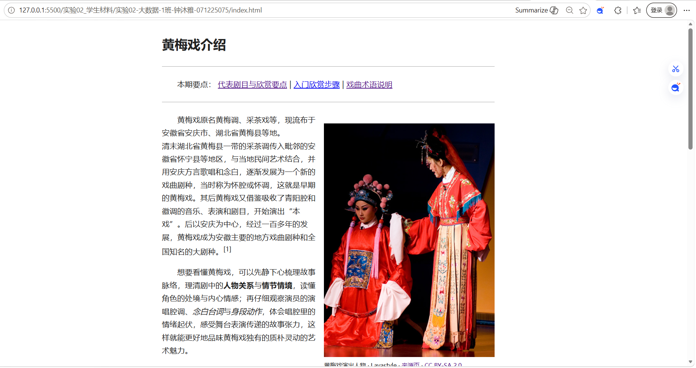
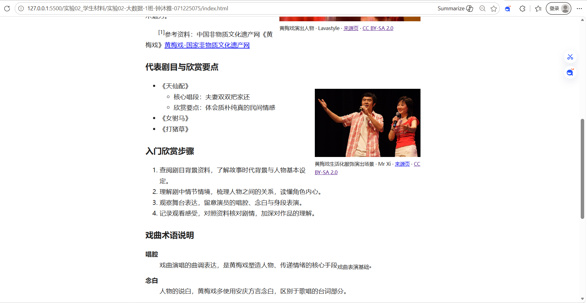
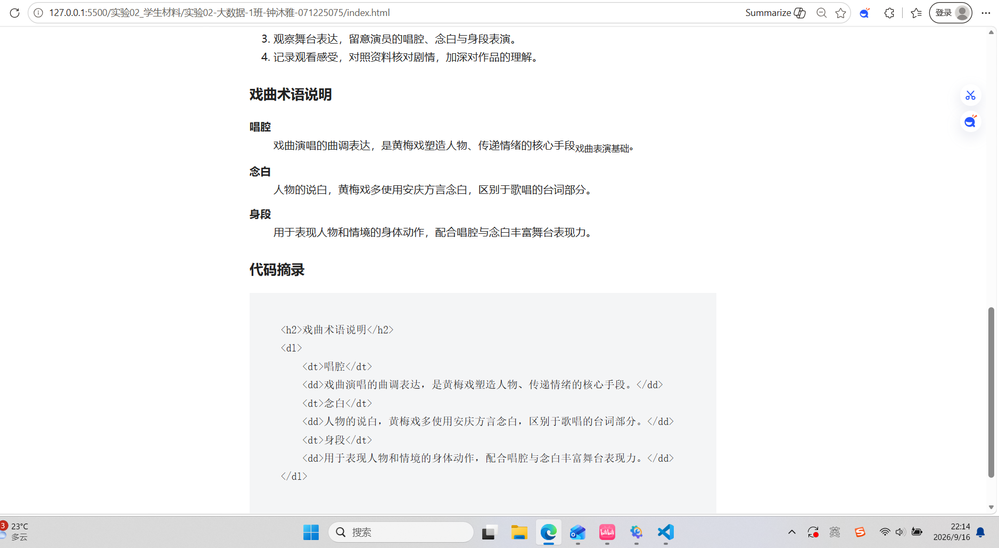

填写方法：用VS Code打开本文件，将“待填写”替换为自己的记录，保存后用浏览器打开查看。浏览器中的文字不能直接编辑保存。提交前删除填写提示，保留各级标题。
本报告应与index.html、checks.html和debug.html放在同一目录。截图放入screenshots文件夹，随项目一起提交。
操作系统及版本：Windows 11。编辑器及版本：VScode 1.137.0。浏览器及版本：Microsoft Edge。
待填写：介绍页面包含哪些栏目，选取了哪些文字、图片和参考链接。
填写提示：按本人实际操作顺序记录，说明修改位置、所用标签以及修改目的。
在本地新建 WebProject 项目文件夹，创建`index.html`文件；书写基础 HTML 骨架`<!doctype html>`、`<html>`、`<head>`、`<body>`。在`<head>`中设置`<meta charset>`编码、视口 meta 标签，`<title>`设置页面标题为**黄梅戏介绍**，引入外部 CSS 样式文件，搭建网页基础文档结构。
待填写：选取本人编写的关键代码并解释标签和属性的作用。代码中的小于号写为<，大于号写为>，与号写为&。
<h1>黄梅戏介绍</h1>
<p>黄梅戏原名黄梅调、采茶戏等，现流布于安徽省安庆市、湖北省黄梅县等地。</p>
<p>清末湖北省黄梅县一带的采茶调传入毗邻的安徽省怀宁县等地区，与当地民间艺术结合，并用安庆方言歌唱和念白，逐渐发展为一个新的戏曲剧种，当时称为怀腔或怀调，这就是早期的黄梅戏。其后黄梅戏又借鉴吸收了青阳腔和徽调的音乐、表演和剧目，开始演出“本戏”。后以安庆为中心，经过一百多年的发展，黄梅戏成为安徽主要的地方戏曲剧种和全国知名的大剧种。<sup>[1]</sup>。</p>
<p>想要看懂黄梅戏，可以先静下心梳理故事脉络，理清剧中的<strong>人物关系</strong>与<strong>情节情境</strong>，读懂角色的处境与内心情感；再仔细观察演员的演唱腔调、<em>念白台词</em>与<em>身段动作</em>，体会唱腔里的情绪起伏，感受舞台表演传递的故事张力，这样就能更好地品味黄梅戏独有的质朴灵动的艺术魅力。</p>
<p><sup>[1]</sup>参考资料：中国非物质文化遗产网《黄梅戏》<a href="https://www.ihchina.cn/art/detail/id/13280.html" target="_blank">黄梅戏-国家非物质文化遗产网</a></p>代码解释：<h1>为一级标题，设置页面大标题；<p>划分文本段落；<strong>实现文字加粗强调；<em>实现文字斜体；<sup>实现文字上标，用于参考文献序号；<a>是超链接标签，href属性用来填写目标网址，target="_blank"属性设置点击链接在新浏览器标签页打开，不会覆盖当前页面。



<ul>
<li>《天仙配》欣赏要点</li>
<ul>
<li>人物关系</li>
</ul>
</ul>
<ul>
<li>《天仙配》欣赏要点
<ul>
<li>人物关系</li>
</ul>
</li>
</ul>
修复理由：HTML规定<ul>的直接子元素只能是<li>。原代码将子<ul>直接放在外层<ul>下，属于非法嵌套；修改后把子列表移入<li>标签内部，符合列表嵌套语法规范。
<dl>
<dt>唱腔<dd>戏曲演唱的曲调表达</dd></dt>
</dl>
<dl>
<dt>唱腔</dt>
<dd>戏曲演唱的曲调表达</dd>
</dl>
修复理由：<dt>与<dd>是同级兄弟标签，不能互相嵌套。原代码将<dd>写在<dt>标签内部，HTML结构非法；修改后把<dt>和<dd>改为同级节点，符合定义列表<dl>的语法规范。
本次实验，我掌握了HTML文本标签、多种列表标签的正确嵌套规则，理解了<p>与<pre>空白渲染的区别，学会使用figure插入图片，以及利用转义字符<、>在页面展示HTML源码。
遇到的问题与解决方法：
本次实验问题均已解决。后续我会养成规范书写标签的习惯，学习CSS来美化网页，进一步提升代码整洁度。
成绩：由教师填写。